What Is Science?
Science uses evidence to build testable explanations and predictions about natural phenomena. It also includes the knowledge generated through that process.
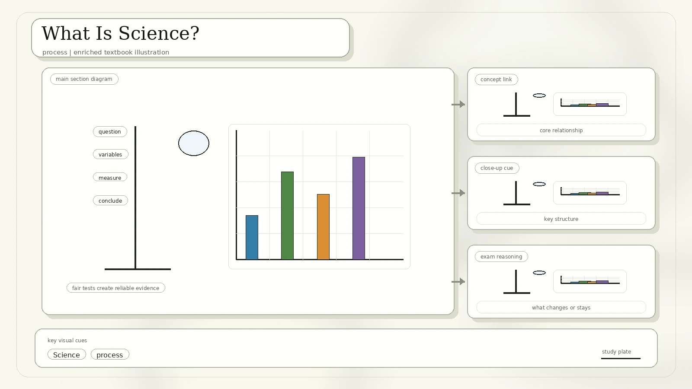
Scientific ideas need observations, measurements, or experimental results behind them.
A scientific explanation must lead to predictions that can be checked.
Science is not just a collection of facts; it is a way of investigating nature.
Understanding nature means using reasoning, not passive observation or judgement.
Video reference from the source page: What is Science? https://www.youtube.com/watch?v=wVLaf10T0zI
Science In A Real World
The source diagram shows science as an iterative filter: observations create questions, questions lead to hypotheses, and experiments remove weak explanations.
Notice a pattern or event.
Turn the observation into a question.
Use experiments to compare explanations.
Use the strongest hypothesis to make new predictions.
What Is A Scientific Explanation?
What do you know?
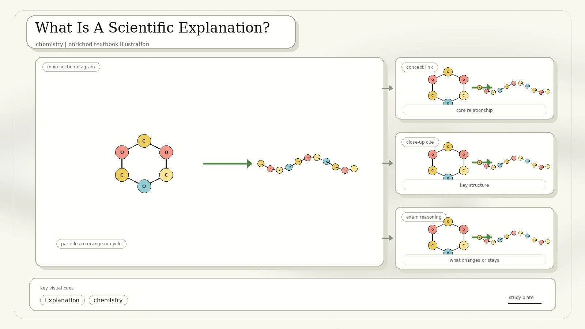
How do you know that?
Why does your evidence support your claim?
The Cycle Of Science
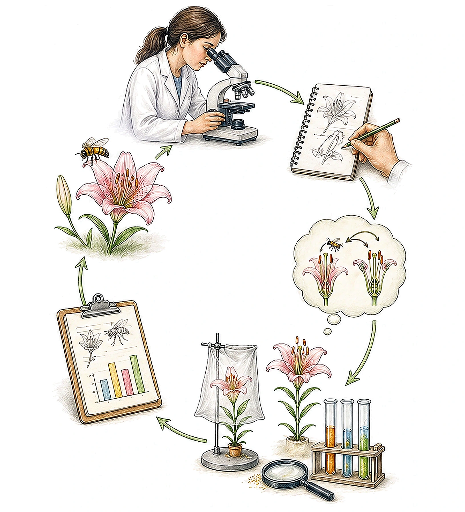
Scientific reasoning is both inductive and deductive.
Inductive Reasoning
Moves from specific observations to broader generalizations and theories.
- Observe and measure.
- Detect patterns and regularities.
- Form a tentative hypothesis.
- Develop a broader conclusion or theory.
Example: Adam's dog has four legs. Alice's dog has four legs. Therefore, all dogs have four legs.
Deductive Reasoning
Works from a general idea toward a specific hypothesis and test.
- Start with a theory about a topic.
- Narrow it into a testable hypothesis.
- Collect observations or data.
- Test whether the specific case fits.
Example: All dogs have four legs. Eric's pet is a dog. Therefore, Eric's pet has four legs.
Scientific Inquiry
- The process used by scientists to research a question is called scientific inquiry.
- Trying to find the answers to a question is called the scientific method.
- A scientific inquiry begins with a question about the world around us and how it works.
- After a question has been identified, the next step is to collect all possible information that relates to the investigation by doing background research, making observations, and conducting experiments.
Science Processes
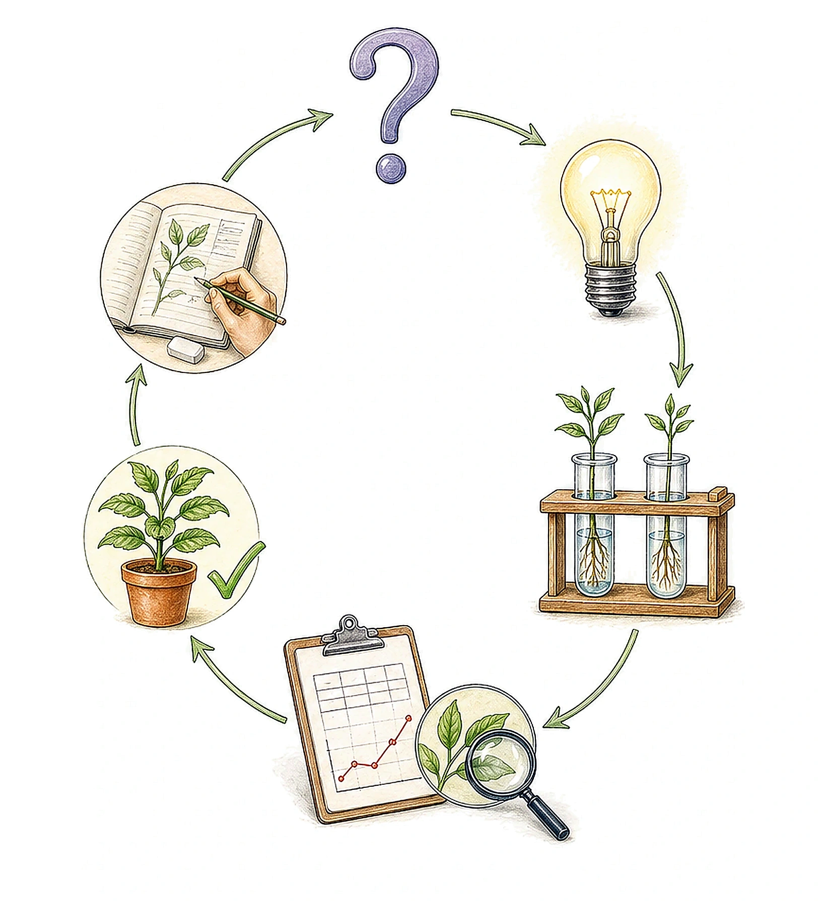
Example topic from the source: Galileo, mass, weight, force, and speed. Video reference: https://www.youtube.com/watch?v=NMM8vx9vDiE
Use Models In Science
A model is a representation of something that is too small, too big, or too expensive to observe in real life. Since models simplify things to make observing and thinking about them easier, they are very useful tools for scientists.
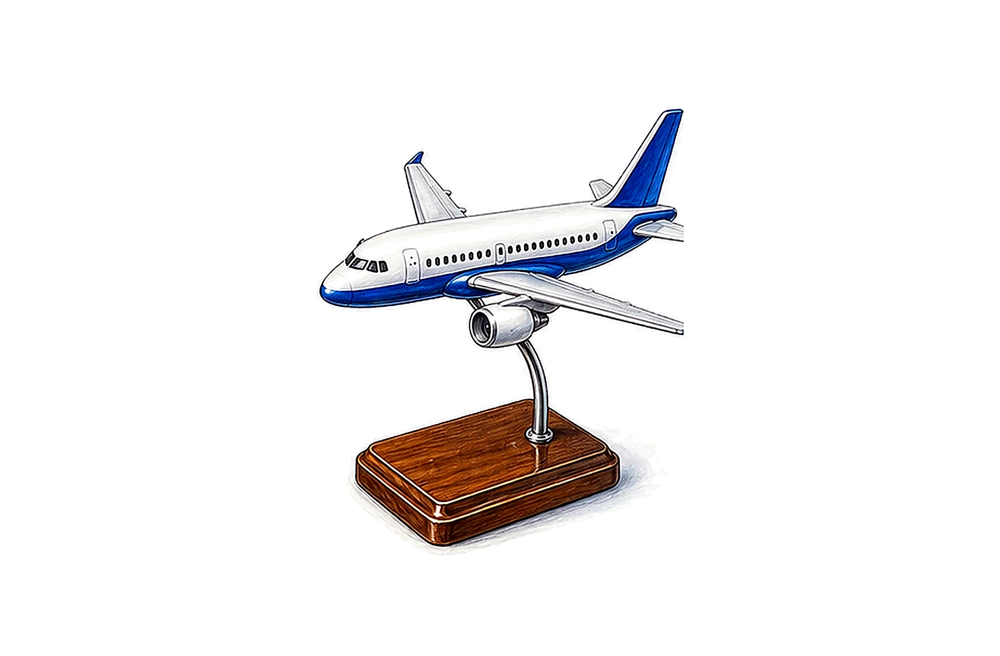
Aircraft model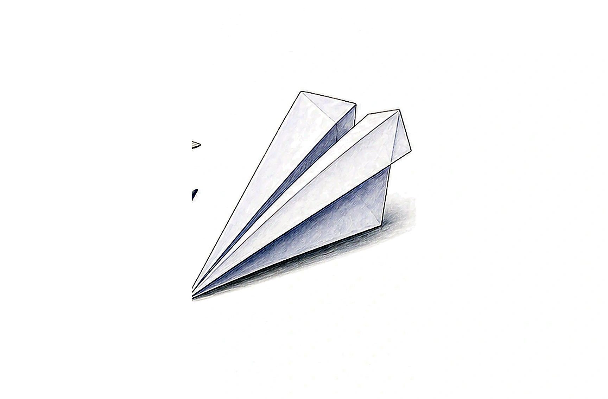
Paper airplane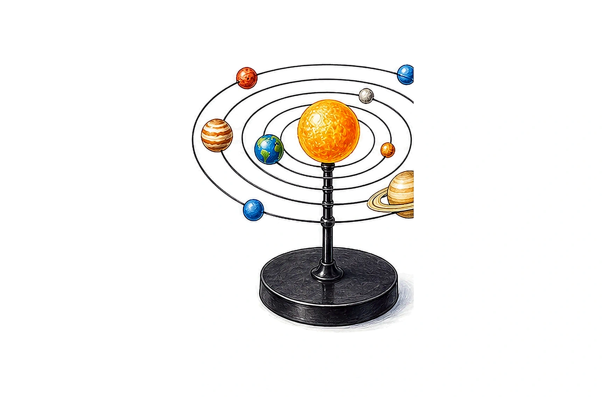
Solar system model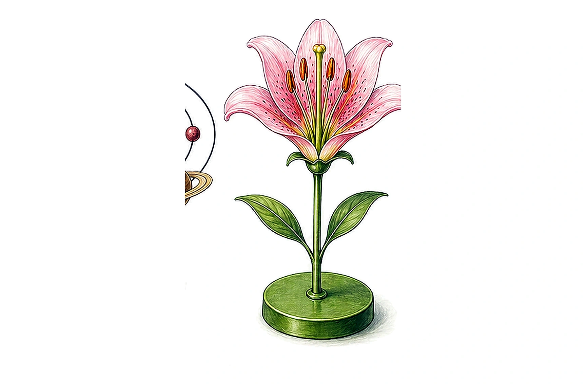
Flower model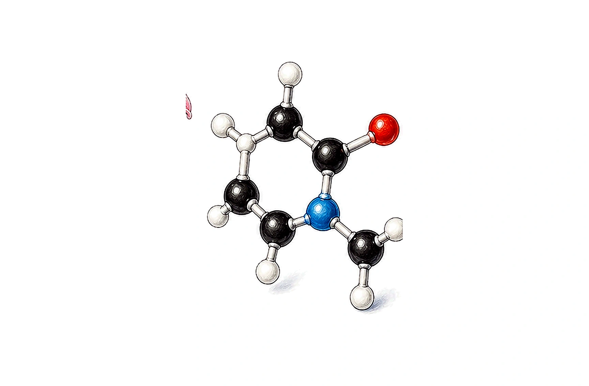
Molecular modelScientific Ideas, Theories, And Laws
Scientific Theory
A theory is a proposed explanation that has been tested extensively and is supported by many observations.
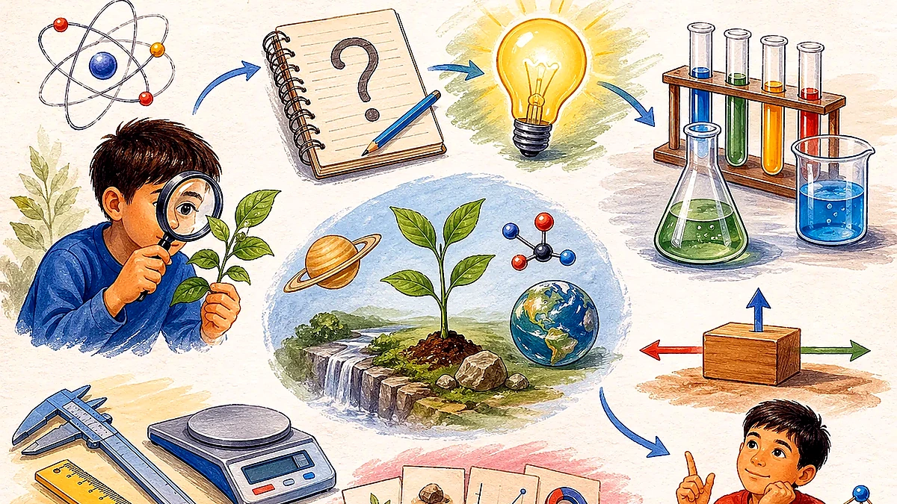
It helps answer: why does this happen?
Scientific Law
A law is a rule based on many observations. It describes how something in nature behaves.
It helps answer: what pattern happens?
Scientific ideas often start as predictions. Evidence can support, weaken, or reject those predictions.
Theories Or Laws?
Fields Of Science
Life Science
Living things and how organisms function and interact.
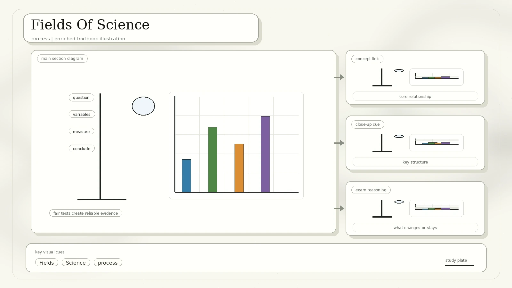
Inherited instructions carried in cells and bodies.
Animals, plants, and organisms living together in habitats.
Small living structures, diagnosis, treatment, and health.
Chemical Science
Atoms, elements, substances, and how they combine or change.
Chemical reactions inside living cells.
Carbon compounds, nonliving substances, and electric currents from reactions.
Atoms that break apart and release powerful radiation.
Physical And Earth Science
Matter, motion, forces, energy, light, and natural laws.
Motion, light, electric currents, and magnetic fields.
Energy flow and wave phenomena such as sound.
Space, rocks and landscapes, and weather conditions.
Recognition note: this page was rebuilt from the first scanned PDF, `IMG_20260427_0001.pdf`, without copying the PDF into the GitHub Pages folder.